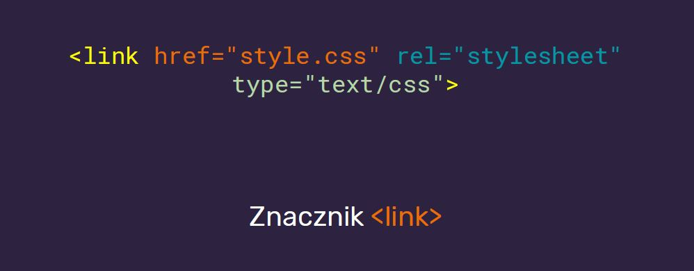
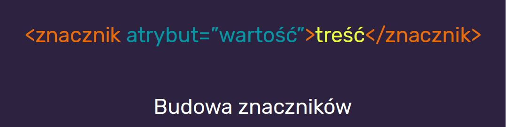
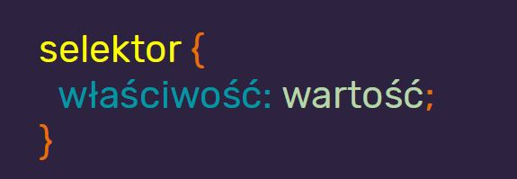

Spis treści, czego się nauczyłam
- Czym jest frontend?
- Różnice w pracy na systemach Windows / Linux / MacOS
- Przedstawienie narzędzi wykorzystywanych w trakcie szkolenia
- Ścieżka rozwoju
- Mój pierwszy projekt!
Maciek Korsan - stronka WTF - strona domowa
Maciek Korsan - link do szkolenia na devstyle WTF - kurs
HTML&CSS - darmowy kurs HTML & CSS od podstaw
Codecademy - kilka prostych kursików, które mnie wprowadziły Codecademy
Poradniki od Mozilla Developers Kurs Mozilla
W tym tygodniu nauczyłam się podstaw budowy jak zbudowana jest strona. Stworzyłam też szkieletora - pierwszą stronę internetową, która będzie moim dziennikiem nauki. Poznałam podstawy HTML oraz podstawy CSS
Budowa znaczników html (tutaj dodam za chwilę screen)
Budowa reguły CSS
Poznałam też obsługę narzędzi developerskich, ale cieżko mi ją trochę spamiętać (tutaj trzeba dodać jakiś memix zrobiony za pomocą narzędzi developerskich)
Jeśli chodzi o html, to rozwijaliśmy dalszą wiedzę na temal
semantyki. Poznałam znaczniki, br, b, em, strong, i - a także
równicę między nimi.
Bardzo istotną rzeczą była nauka dołączania obrazków i linków.
Dzieki temu powstała też nawigacja na tej stronie :)
Notatki o CSS z tygodnia drugiego